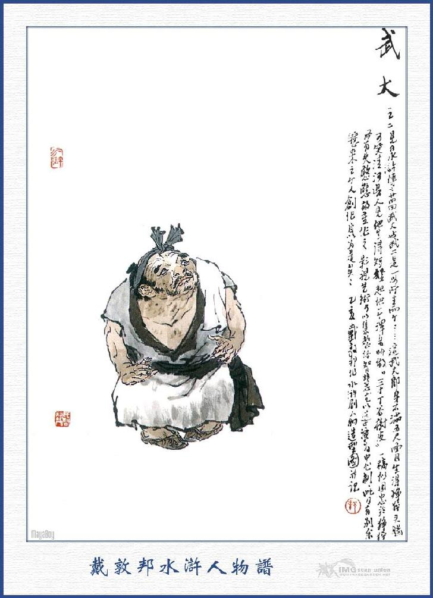
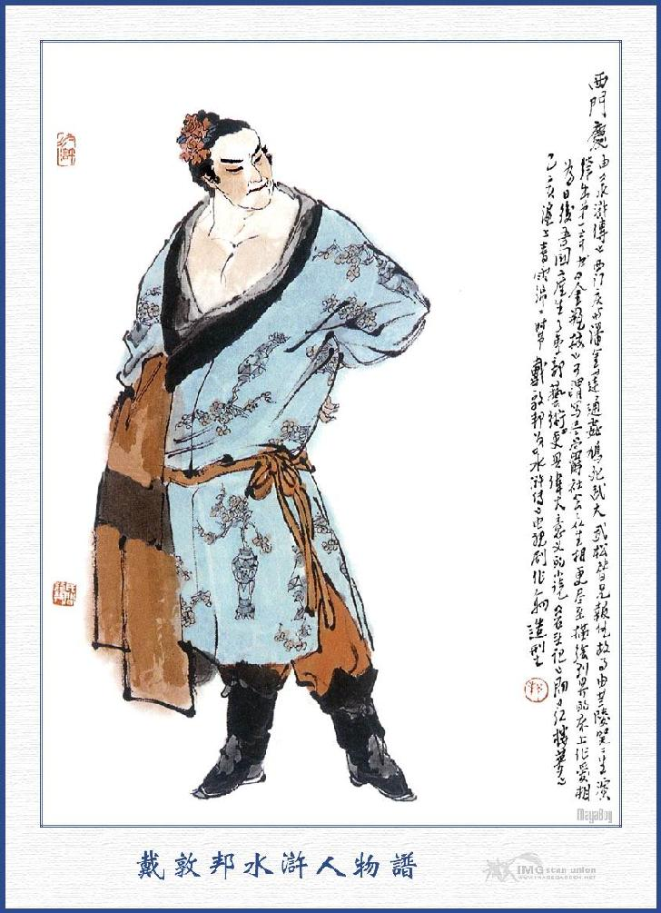
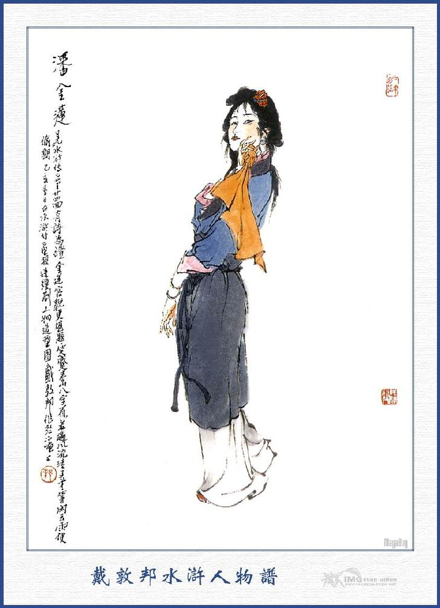
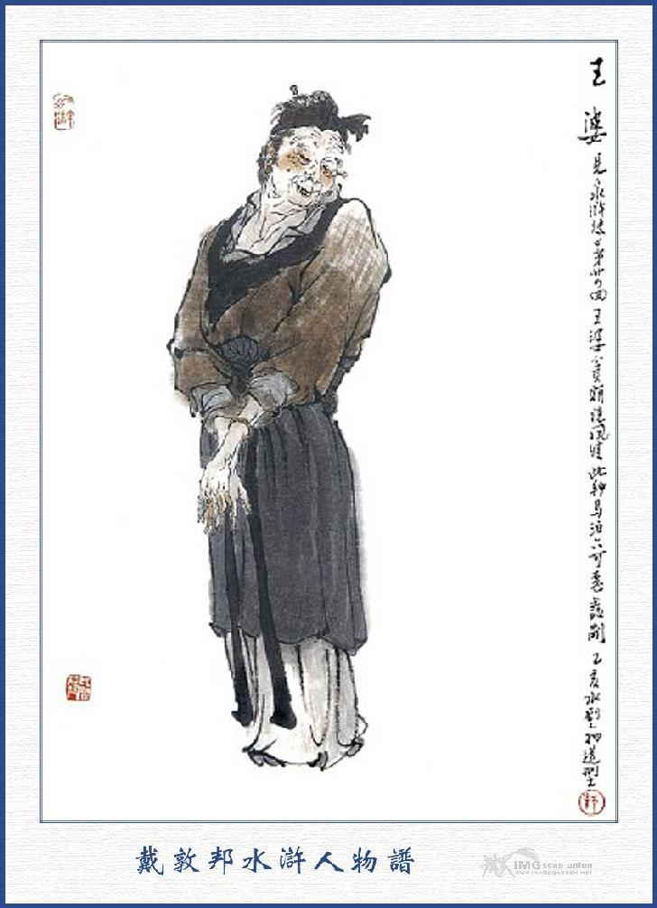
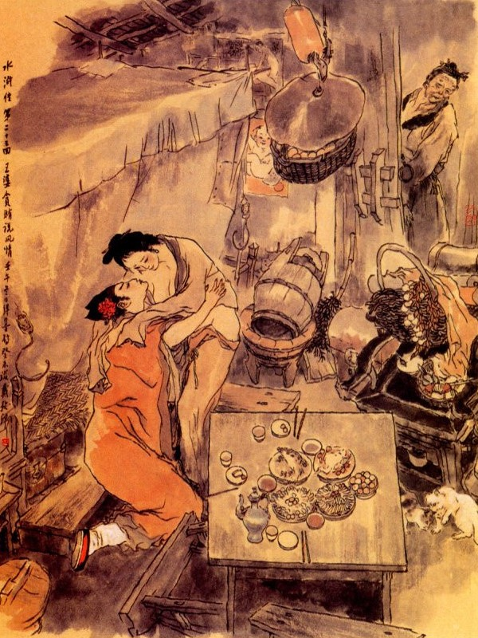

Khi đó Võ Tòng nghe có người gọi, bèn quay lại nom thì chính người ấy là Võ Đại Lang. Anh ruột của mình, liền thụp ngay xuống đất lạy mà rằng:
- Ca Ca cũng ở đây hay sao? Hơn một năm nay tiểu đệ không được gặp Ca Ca, trong bụng lấy làm áy náy vô cùng.
Võ Đại Lang đáp lại rằng:
- Nhị đệ đi trong bấy nhiều lần làm sao mà không gửi thơ về cho ta, khiến cho ta vừa oán giận mà lại nhớ mong hoài.
- Sao Ca Ca lại nói vừa oán giận vừa nhớ mong hoài?
- Ta oán giận là khi chú còn ở huyện Thanh hà chỉ uống rượu say rồi lại đánh nhau với người khác để cho ta bị quan tư đòi hỏi quấy rầy, đến mấy tháng trời mới gỡ được xong. Ta mong là mong vì ta mới lấy được người vợ ở Thanh Hà rồi bao quân khốn nạn nó cứ làm rắc rối cả ngày; nếu có chú ở nhà thì còn đứa nào dám đến mà xấc láo. Bây giờ ta ở đây cũng được yên thân, lại phải dọn đến phố đây thuê nhà mà ở bởi thế càng mong nhớ lắm.
Nguyên Võ Tòng cùng Võ Đại Lang là hai anh em ruột, cùng cha mẹ sinh ra, song Võ Tòng thì mình cao tám thước, tướng mạo đường đường, sức lực kể có trăm ngàn cân nặng, bởi thế mới đánh được hổ trên núi Cảnh Dương mà lẫy lừng danh tiếng. Còn Võ Đại thì người ngắn không đầy năm thước, hình dung xấu xí, đầu tóc mặt mũi trông rất buồn cười, người huyện Thanh Hà thấy anh ta tủn hoẳn như thế, nên thường gọi anh ta là Tam Thốn Đinh Xác Thụ Bì. Trong hạt huyện Thanh Hà có một nhà phú hộ, nuôi một đứa hầu con tên là Kim Liên, hơn hai mươi tuổi, nhan sắc cũng có vẻ ưa nhìn. Phú hộ có ý muốn gạ gẫm, song Kim Liên nhất định không nghe, toan đi mách với bà chủ là vợ phú hộ. Nhân thế lão phú hộ tức giận, bèn đem con Kim Liên gả cho Võ Đại Lang mà không lấy một đồng một chữ nào cả. Từ khi Võ Đại Lang lấy được Kim Liên về thì bọn nhàn đãng chơi bời ở quanh đấy, cứ hàng ngày đến nhà để chế diễu làm cho Võ Đại Lang tức bực muôn phần. Còn Kim Liên thấy hình dạng Võ Đại tủn hoẳn, tùn hoằn, nhân vật không ra nhân vật mà không có chút gì ra vẻ phong lưu thì cũng đem lòng khinh dễ mà ngày ngày phóng túng tự do. Thỉnh thoảng mấy đứa tụi du đãng lại vơ vẩn đến cửa mà nói rằng: "Miếng thịt dê rơi vào miệng chó" làm cho Võ Đại Lang càng tức bực, nên trong lòng phải thu xếp cửa nhà mà dọn đi nơi khác.
Khi tới huyện Dương Cốc, thuê một gian nhà, hai vợ chồng cùng ở rồi mỗi ngày Võ Đại Lang làm bánh bao ra phố bán để kiếm ăn. Hôm ấy nhân gánh hàng đi bán, chợt gặp Võ Tòng thì hai anh em chuyện trò với nhau rất là vui vẻ. Bấy giờ Võ Đại bảo với Võ Tòng rằng:
- Này em này, hôm nọ ta thấy phố sá đồn ầm lên rằng có người họ Võ đánh chết con hổ trên núi Cảnh Dương rồi quan huyện cho làm chức Đô Đầu ở đây. Ta vẫn đoán chắc là em, nhưng chưa làm sao mà biết đích xác, nay được gặp ở đây, thực là may lắm. Thôi, ta hãy nghỉ sự buôn bán, để cùng về nhà chơi đã.
- Ca Ca thuê nhà ở đâu?
Võ Đại Lang trỏ ra trước mặt mà bảo rằng:
- Nhà ở ngõ Tử Thạch kia.
Võ Tòng bèn gánh đỡ hàng cho anh rồi theo Võ Tòng về ngõ Tử Thạch. Khi tới cửa, Võ Đại gõ cửa gọi người ra mở. Đoạn rồi thấy một người đàn bà trẻ trung là vợ Võ Đại ở trong nhà, chạy ra mà hỏi rằng:
- Sao mình về sớm thế?
Võ Đại trỏ vào Võ Tòng mà bảo rằng:
- Chị mày không biết, chú nó đã về đây, đi ra mà chào đi.
Nói đoạn nhắc lấy gánh hàng cất vào trong nhà rồi chạy ra bảo em rằng:
- Nhị đệ vào trong nhà này chào chị đi.
Võ Tòng vâng lời, vén màn vào chào chị dâu. Võ Đại có dáng vui mừng bảo với vợ rằng.
- Đại tẩu ơi! Người họ Võ đánh hổ trên núi Cảnh Dương, mới rồi nhận chức Đô Đầu, tức là em ta đây.
Người đàn bà nghe nói, liền chấp tay vái chào lại Võ Tòng. Võ Tòng vội mời chị dâu ngồi trên rồi cúi xuống lạy. Người đàn bà chạy đến nâng Võ Tòng dậy mà nói rằng:
- Thúc thúc chớ làm như vậy không tiện.
- Xin tẩu tẩu cứ ngồi lên nhận lễ.
- Lẽ đâu dám thế? Mọi hôm tôi nghe thấy mụ Vương Bà bên cạnh vách đây nói chuyện có người đánh chết hổ, đã toan rủ nhau đi xem, nhưng mà bận việc nên không đi được, ai ngờ lại chính là thúc thúc đây. Xin mời thúc thúc lên gác ngồi chơi nói chuyện.
Nói đoạn ba người cùng lên gác ngồi rồi vợ Võ Đại bảo với chồng rằng:
- Để tôi ngồi tiếp thúc thúc đây đại ca đi kiếm thức gì, về mời thúc thúc xơi rượu.
Võ Đại nói:
- Phải lắm, nhị đệ hãy ngồi chơi đấy rồi tôi lên ngay bây giờ.
Nói xong liền ba chân bốn cẳng chạy đi xuống gác. Bấy giờ người đàn bà thấy tướng mạo Võ Tòng như vậy thì nghĩ thầm trong bụng rằng: "Hai anh em nhà này, cùng cùng một cha mẹ sinh ra, sao mà Võ Tòng lại lực lưỡng thế kia, ví phỏng ta lấy được người chồng như thế thì cũng đáng một đời. như ông chồng mình thì khổ quá, người chẳng ra người, ma chẳng ra ma, không còn thể nào mà chịu được! Ừ! Như vậy anh Võ Tòng kia, hổ anh ta còn đánh được, trách nào mà khí độ chẳng hơn người? Nghe nói anh ta chưa vợ, hay tiện đây ta bảo đến cùng ở chung một nhà thì cái đoạn nhân duyên sau này há chẳng thú lắm sao?” Nghĩ đoạn tủm tỉm cười mà hỏi Võ Tòng rằng:
- Thúc thúc ở đây được bao lâu?
Võ Tòng đáp:
- Mới đến đây được mười lăm hôm nay.
- Thúc thúc ở đâu?
- Tôi hiện ở tạm trong huyện.
- Nếu thế thì không tiện lắm nhỉ?
- Tôi có một mình cũng dễ xử, vả chăng sớm khuya đã có đám thổ binh hầu hạ.
- Bọn ấy nó hầu hạ làm sao được chu tất? Chi cho bằng thúc thúc dọn về ở cả đây, để tôi trông nom cơm nước một thể, thỉnh thoảng thúc thúc có muốn ăn uống gì cũng đỡ phải phiền lòng nghĩ đến, như thế chẳng tiện hơn sao?
- Vâng xin cám ơn tẩu tẩu.
- Chẳng hay là có thiếm ấy ở đâu? Thì đem về cũng tiện.
Võ nhị nói:
- Tôi chưa có vợ con chi cả.
- Năm nay thúc thúc bao nhiêu tuổi.
- Võ nhị tôi hai mươi lăm tuổi.
Người đàn bà mỉm cười mà rằng:
- Vậy thì thúc thúc hơn tôi ba tuổi, dạo trước thúc thúc ở đâu đến đây?
- Tôi ở Thương Châu hơn một năm, vẫn tưởng Ca Ca còn ở huyện Thanh Hà, ai ngờ cũng dọn đến đây rồi.
- Thúc thúc không biết, nói ra dài lắm, từ khi tôi lấy Ca Ca rồi, bị người ta nói khinh rẻ khó chịu, bất đắc dĩ mới phải dọn đến đây ở, giá được hùng tráng như thúc thúc thì đứa nào dám ho he đến nữa.
- Vì Ca Ca tôi xưa nay vốn tính không liều lĩnh như tôi.
Chị chàng ta lại cười mà rằng:
- "Người không xương cứng, sao vững được thần" Tính tôi xưa nay thích nhanh nhẹn, chứ những người lì lì gọi ba lần chẳng thưa, bốn lần chẳng chuyển như thế thì chịu làm sao được?
Võ Tòng nói:
- Tuy thế gia huynh tôi không sinh sự, không phiền đến tẩu tẩu phải lo.
Đương khi nói chuyện thì Võ Đại đã mua rượu thịt và cùng các thứ hoa quả đem về bếp rồi chạy lên gọi vợ mà bảo rằng:
- Mình xuống dọn rượu mang lên đây.
Chị chàng nghe nói liền bảo Võ Tòng rằng:
- Chú tính người thế thì còn biết gì nữa, chú đương ngồi ở đây mà gọi tôi đứng dậy thì sao cho tiện?
Võ Tòng nói:
- Xin tẩu tẩu cứ tự tiện cho.
Người đàn bà lại lên tiếng bảo Võ Đại rằng:
- Sao không nhờ Vương Bà ở bên kia sang dọn giúp cho? Có thế cũng không biết làm sao được.
Võ Đại liền gọi Vương Bà ở nhà liền vách sang dọn tử tế rồi bày lên bàn trên gác. Đoạn rồi bảo vợ ngồi vào bàn chủ vị ở giữa, để Võ Tòng ngồi đối diện, còn mình ngồi ra một bên. Bây giờ Võ Đại nâng bầu rượu rót ra ba chén rồi người vợ nâng chén rượu lên mà nói với Võ Tòng rằng:
- Thúc thúc chớ cười, ở đây không có gì thết đãi, xin thúc thúc xơi chén rượu suông.
Võ Tòng nói:
- Cám ơn tẩu tẩu, sao tẩu tẩu dạy quá lời thế?
Bên kia Võ Đại thì lúi húi vừa hâm rượu vừa rót rượu, mặc cho hai người thù tạc với nhau mà không nói câu gì cả. Người đàn bà cười nụ mà nói rằng:
- Cá thịt đây sao thúc thúc không chịu ăn một miếng nào cả, để tôi xin gắp cho thúc thúc xơi.
Võ Tòng thấy vậy, cho là tình ruột thịt chị em trong nhà, nên cứ điềm nhiên ăn uống không lý hội gì đến tình kia ý khác. Còn Võ Đại vốn tính vụng về, xưa nay có biết tiếp đãi đến ai, vì thế nên khi chị chàng kia phóng ý tự nhiên, uống dăm ba chén rượu rồi giương hai con mắt nhìn chòng chọc vào Võ Tòng mà không chớp, Võ Tòng thấy vậy thì có ý ngượng, cúi đầu xuống mà không dám trông lên. Uống rượu được một lúc rồi Võ Tòng xin phép trở về huyện, vợ chồng Võ Đại cố lưu lại không được, liền cùng nhau đưa Võ Tòng xuống dưới gác. Khi xuống đến dưới nhà, chị chàng ta lại nói với Võ Tòng rằng:
- Thúc thúc tất phải dọn đến đây mà ở, nếu không thì hai vợ tôi mang tiếng người ta chê cười là anh em không bằng người ngoài. Mình nên thu xếp một gian phòng. Để mời thúc thúc về đây cho vui, chứ ở phố xá người ta mai mỉa.
Võ Đại nói:
- Đại tẩu nói phải đấy, nhị đệ nên dọn về đây ở cho tôi đỡ buồn.
Người đàn bà lại dặn khan dặn vãn rằng:
- Thúc thúc phải nhớ mới được, tôi ở đây mong đợi thúc thúc đó.
Võ Tòng vâng lời, chào anh chị mà đi về huyện. Về tới huyện, Võ Tòng liền đem chuyện kêu với quan Huyện và xin phép dọn ra ngõ Tử Thạch cùng ở với anh và hằng ngày xin đúng giờ vào hầu việc. Quan Huyện nghe nói khen Võ Tòng là người hiếu để liền y lời cho phép ngay. Võ Tòng tạ ơn Quan Huyện rồi thu thập hành lý cùng các đồ vật và gọi một tên thổ binh để gánh ra nhà Võ Đại. Võ Đại thấy em đến thì trong lòng vui mừng khôn xiết, liền tìm thợ mộc về ngăn một gian phòng rồi kê giường ghế, bàn và lò sưởi để cho Võ Tòng ở đó.
Nước non nghĩa nặng,
Cốt nhục tình sâu,
Tài cao chí cả đến đâu,
Anh em cốt nhục dễ hầu dám khinh.
Thế gian lắm kẻ bạc tình,
Bỏ nhà làm bộ tung hoành nước non.
Biết đâu hiếu để tan hồn,
Thì lòng chủng loại phổng còn được chăng.
Võ Tòng từ khi đến ở nhà cùng anh thì người chị dâu hết sức chìu chuộng, sáng dậy nước sôi hầu hạ, trưa đến cơm cháo trông nom, không hề chút gì trễ nãi. Võ Tòng thấy chị dâu khó nhọc như vậy, toan bắt một tên thổ binh ra để hầu hạ thổi nấu, song vợ Võ Đại nhất định không nghe mà tự xin đảm nhiệm hết cả. Mấy hôm sau Võ Tòng lại đưa tiền cho Võ Đại mua các thức trà bánh, để mời phố xá xóm giềng đến chơi nói chuyện. Các nhà hàng phố cũng đem trà bánh đến biếu đãi anh em Võ Tòng, đi lại rất là tử tế. Võ Tòng lại lấy một tấm đoạn hoa đưa tặng người chị dâu để may áo xiêm. Vợ Võ Đại thấy vậy thì hớn hở mừng thầm mà rằng:
- Thúc thúc có lòng yêu như vậy, tôi xin vâng lĩnh ngay, không dám từ chối.
Từ đó Võ Tòng cứ ngày hai buổi đi vào hầu trong huyện rồi lại trở về ăn ngủ ở nhà Võ Đại, còn Võ Đại thì vẫn giữ nghề bán bánh để kiếm ăn như trước. Mỗi khi Võ Tòng ở huyện về bất cứ sớm khuya, người đàn bà đều chỉnh đốn cơm canh mà thờ phụng Võ Tòng một cách vui vẻ thân mật làm cho Võ Tòng phải e ngượng không đành tâm. Thỉnh thoảng chị ta lại kiếm chuyện khơi đùa, song Võ Tòng là một người ngay thẳng vẫn cứ điềm nhiên, có chuyện thì nói, không chuyện thì thôi cũng không lấy gì làm nghi ngại. Thấm thoát hơn một tháng trời, bấy giờ vào khoảng tháng chạp mùa đông, ngày nào cũng gió bấc đìu hiu, mây đen kín mít mà tuyết phủ sương che rất chiều lạnh lẽo. Một buổi sáng hôm kia, Võ Tòng vào hầu huyện, mãi quá trưa không về ăn cơm. Vợ Võ Đại ở nhà, cơm nước trưa xong, liền giục chồng đi bán hàng chiều rồi nhờ Vương Bà ở bên cạnh vách, mua các thứ rượu nhắm mang về và quạt một lò lửa để sẵn vào đó. Đoạn rồi trong bụng nghĩ thầm rằng: "Hôm nay ta phải tìm cách để khiêu ghẹo anh này, không có lẽ anh ta là đá gỗ mà không động tình được!” Nàng nghĩ vậy thì trong bụng hớn hở mừng thầm, liền ra trước rèm để đợi ngóng Võ Tòng. Được một lát thấy Võ Tòng lặn lội trên đá, tuyết đi về, chị chàng ta vội mở cánh cửa rèm ra đón mà nói rằng:
- Thúc thúc hôm nay rét lắm nhỉ?
Võ Tòng cảm ơn đáp lại rồi bước vào vào trong cửa mà bỏ nón xuống, chị chàng kia liền hai tay đỡ nón xuống cho Võ Tòng. Võ Tòng thực bụng thấy vậy nói rằng:
- Có đâu dám phiền tẩu tẩu như vậy?

VÕ ĐẠI
Nói đoạn treo nón lên vách rồi cởi đai nịt và áo dài ra mà đem treo vào phòng. Người đàn bà bảo với Võ Tòng rằng:
- Sáng hôm nay tôi đợi suốt buổi, sao không thấy thúc thúc về ăn cơm?
- Tôi có anh em bạn ở trong huyện mời ăn sáng, nên không về được. Vừa rồi lại có người mời uống rượu, nhưng tôi không muốn ở lại, đành phải tháo để về đây.
Người đàn bà cười mà rằng:
- Nếu vậy thúc thúc vào lò sưởi cho ấm.
Võ Tòng vâng lời rồi tháo giày ướt, đi sang đôi giầy khác mà ngồi vào ghế bên cạnh lò lửa ở phòng khách để sưởi. Chị chàng kia đóng cửa trước cài cửa sau cẩn thận rồi đem các thức nhắm bày vào bàn trong phòng Võ Tòng. Võ Tòng thấy vậy liền hỏi:
- Ca Ca đi đâu chưa về?
- Ca Ca còn đi bán hàng đã về đâu, tôi xin hầu thúc thúc mấy chén rượu cho vui.
- Xin để đợi Ca Ca về sẽ uống.
- Đợi thế nào được, biết bao giờ mà đợi?
Người đàn bà nói xong liền đem rượu ra hâm. Võ Tòng nói.
- Xin tẩu tẩu ngồi đây, để tôi dọn đỡ.
Chị chàng cười mà rằng:
- Thúc thúc cứ ngồi, để tôi làm cũng được.
Nói đoạn cũng kéo chiếc ghế, để bên cạnh lò lửa để ngồi rồi rót rượu ra cầm ở tay mà bảo với Võ Tòng rằng:
- Trời đương rét lạnh thế này, xin thúc thúc uống một chén rượu thành đôi nữa.
Võ Tòng lại tiếp lấy uống hết rồi cũng rót một chén đưa mời chị dâu. Người đàn bà uống xong lại rót luôn chén nữa, để lên bàn trước mặt Võ Tòng, hơi lộ da bụng, bỏ rũ tóc mây, miệng cười chúm chím như bông hoa mà bảo Võ Tòng rằng:
- Tôi thấy người ta nói rằng: Thúc thúc có nuôi một người con hát, ở phố bên kia trước cửa huyện, không biết rằng có thực chăng?
Võ Tòng đáp rằng:
- Tẩu tẩu đừng nhge người ta nói càn làm gì, tôi đâu có phải một người như thế đâu?
Người đàn bà lại nói:
- Chẳng chắc đâu! Miệng thế nhưng lòng lại khác thì sao?
- Tẩu tẩu không tin, cứ hỏi Ca Ca thì biết.
- Người ấy thì còn biết gì, nếu biết được những việc ấy thì chả phải đi bán bánh, xin mời thúc thúc xơi chén rượu nữa.
Nói xong lại rót rượu mà uống luôn ba bốn chén nữa. Bấy giờ người đàn bà đã hơi men chếnh choáng, lại càng khiêu động lòng xuân không ai giữ được, liền kiếm chuyện để khiêu ghẹo Võ Tòng.
Võ Tòng đã hơi biết ý, chỉ cúi đầu mà không nói câu gì nữa. Đoạn rồi người đàn bà đứng dậy đi hâm rượu thì Võ Tòng lấy cái que cời ra để gảy lò than mà nghĩ ngợi một mình. Khi người đàn bà hâm rượu xong đem vào buồng thì một tay cầm vò rượu, một tay vỗ ngay vào vai Võ Tòng mà nói rằng:
- Thúc thúc chỉ mặc thế này mà không lạnh à?
Võ Tòng thấy vậy, đã có sáu bảy phần khó chịu trong lòng bèn im mà không nói gì cả. Người đàn bà giơ tay giật lấy cái que cời mà rằng:
- Thúc thúc không quen cời lửa để tôi làm cho. Làm sao cũng được như lò lửa thường nóng luôn mới được.
Võ Tòng lại thấy khó chịu lên đến tám chín phần, đành phải ngôi im thin thít. Bấy giờ dục tâm của người đàn bà chừng đã bốc lên như lửa cháy, không còn hiểu đâu đến Võ Tòng có đồng ý hay không liền vứt cái que cời xuống rồi rót ra chén rượu uống hết một nửa, còn một nửa đưa cho Võ Tòng mà bảo rằng:
- Nếu có phải là người hữu tình thì uống hết nửa chén này.
Võ Tòng giật lấy chén rượu hất xuống đất mà nói rằng:
- Tẩu tẩu không nên dơ dáy như thế?
Nói đoạn đẩy người đàn bà một cái rồi trợn mắt lên mà rằng:
- Võ nhị này là thằng con trai đội trời đạp đất, không phải giống chó mà làm bại hoại phong hóa, bỏ mất luân lý kia! Tẩu tẩu chớ nên giở lối vô liêm sỉ như vậy, lỡ khi có đến thế nào thì mặt Võ Nhị này còn nhận thấy tẩu tẩu, chứ cái nắm tay kia không biết tẩu tẩu đâu. Từ nay xin đừng thế mới được. Chị chàng kia nghe như vậy thì chết nửa phần ruột, vừa tức vừa thẹn rồi đẩy cái ghế ra mà nói rằng.
- Người ta đùa cho vui, thế mà cho là thực hay sao? Người đâu không biết lòng kính trọng của người ta? Nói đoạn dọn bát chén đi thẳng xuống bếp.
Còn Võ Tòng thì buồn bực uất ức mà ngồi ở trên buồng một mình. Được một lát Võ Đại đi bán hàng về, vừa bước chân vào đến cửa đã thấy người đàn bà khóc sướt mướt, hai mắt đỏ hoe, chàng ngạc nhiên mà hỏi rằng:
- Đánh nhau với ai đó?
Chị chàng vừa khóc vừa nói:
- Anh tệ bạc quá, nỡ lòng nào dắt người ngoài đến, để khinh bỉ tôi!
- Ai dám đến đây mà khinh bỉ?
- Ông Võ Nhị nhà anh chứ ai! Tôi thấy hắn đi về rét mướt, vội vàng đem rượu cho uống. Ai ngờ hắn thừa cơ vắng vẻ mà toan trêu ghẹo lả lơi, không còn ra thể thống gì nữa?
Võ Đại nghe nói vậy liền gạt đi rằng:
- Em tôi xưa nay là người trung trực, không khi nào như thế, thôi đừng nói to nữa mà hàng xóm người ta cười cho đấy.
Nói đoạn bỏ mặc vợ đó mà lên buồng Võ Tòng.
Vẽ chi một chữ ái tình
Để cho xương thịt tan tành sao đang!
Thế gian vạn kẻ khôn ngoan,
Hỏi lòng hữu ái được thường thế chăng?
Võ Đại lên buồng liền gọi em mà hỏi rằng:
- Em đã ăn cơm chưa! Ta cùng đi ăn một thể cho vui.
Võ Tòng thấy anh hỏi thì ngồi yên không nói nửa lời, trong bụng nghĩ vơ vẩn một lúc rồi đứng dậy thay giầy khoác áo, thắt lưng đội nón mà ra đi. Võ Đại thấy vậy, liền gọi lên rằng:
- Nhị đệ đi đâu đấy?
Võ Tòng lẳng lặng đi ra không đáp. Võ Đại thấy Võ Tòng đi rồi, liền xuống bếp hỏi vợ rằng:
- Tại làm sao ta gọi hắn cũng không thưa, cứ cắm đầu đi thẳng không biết rằng đi đâu thế.
Người đàn bà làm bộ mắng chồng rằng:
- Sao mà ngu thế, nó thẹn, không còn mặt mũi nào trông thấy mình thì phải cút đi chứ làm sao? Từ đây trở đi, tôi cấm không lưu người ấy ở nhà này nữa.
- Nếu để cho hắn dọn đi thì phố xá người ta nói mình còn ra gì nữa.
- Nói lạ, nó đùa bỡn tôi thì thiên hạ không cười! Thôi anh ở với hắn, tôi đây không mặt chó thế được, anh cho tôi một tờ ly hôn rồi anh rước hắn đến đây mà ở.
Võ Đại nghe như vậy thì cứng lưỡi ra, không làm sao mà nói được. Đương khi ấy thì Võ Tòng dẫn một tên thổ binh đem đôi quang gánh đến, đi thẳng vào buồng thu thập các đồ đạc rồi lại gánh ra mà đi ngay, Võ Đại chạy theo ra cửa hỏi rằng:
- Nhị đệ làm sao lại dọn đi đâu thế?
Võ Tòng quay lại đáp rằng:
- Ca Ca không cần phải hỏi, cứ để mặc tôi đi là được rồi.
Nói xong liền đi thẳng mà không hề quay lại. Võ Đại lấy làm lạ, không hiểu ra sao mà cũng không dám hỏi một câu nào nữa. Bấy giờ người đàn bà đứng ở trong vẫn lẩm bẩm mắng luôn miệng rằng:
- Được lắm! Ai bảo rằng có em làm Đô Đầu thì tất nuôi được cả chị lẫn anh, ngờ đâu lại đến đây mà khoét hại! Rõ là giống Hoa Mộc Qua chỉ tốt mã bề ngoài. Thôi, đi đi cũng là phúc, ta cảm ơn trời đất, bớt được cái nợ oan gia ở trước mặt.
Võ Đại thấy vợ nói vậy thì lại càng áy náy trong lòng không biết đầu đuôi ra sao. Rồi đó hằng ngày Võ Đại lại đi buôn bán như thường mấy phen toan vào huyện, để tìm em về ở nhưng lại bị người vợ xỉa xói ngăn đón mà không cho đi cũng đành lòng mà chịu vậy.
Nói về quan Huyện Dương Cốc, từ khi về để nhiệm ở huyện đó tới nay, thấm thoát đã được hơn hai năm trời, tuy không độc ác là mấy, song khoét của dân gian cũng không biết cơ man nào mà kể. Bấy giờ định bụng muốn chuyển của về, gửi một nhà thân quyến ở Đông Kinh, để lo liệu kiếm đường thăng quan tiến chức, nhưng lại e đường sá xa xôi, nhiều tay trộm cướp mà chưa có ai là người đảm đang tâm phúc, nên chưa dám sai đi. Một hôm chợt nghĩ Võ Tòng là tay anh hùng đảm lược, liền cho gọi đến mà bảo rằng:
- Ta có người bà con thân ở Đông Kinh, nay muốn đưa một ít lễ vật và một phong thư vào để hỏi thăm gia sự, nhưng chỉ vì đường sá xa xôi, nhiều đều không tiện vậy ngươi có thể vì ta mà đảm đang đi được thì sau này ta sẽ trọng thưởng cho.
Võ Tòng vâng lời mà rằng:
- Chúng tôi nhờ được ơn ngài đài cử lên cho dẫu có việc gì sai khiến, chúng tôi cũng không dám từ nan và đất Đông Kinh là nơi đô hội, chúng tôi cũng muốn qua trải một phen, vậy xin ngài cứ sắp sửa đi cho, chúng tôi cũng hết lòng tuân lệnh?
Nói đoạn quay về nhà trọ, lấy ra một ít tiền, gọi một tên thổ binh ra phố mua một bình rượu và các thức nhắm rồi đi tới phố Tử Thạch, tìm vào nhà Võ Đại. Khi tới nơi, Võ Tòng ngồi đợi ngoài cửa rồi sai tên thổ binh đem các thứ đồ ăn vào bếp để dọn. Vợ Võ Đại trông thấy Võ Tòng đến thì tơ lòng lại vấn vương không dứt, trong bụng nghĩ thầm, tưởng là Võ Tòng lại hồi tâm đến mình, nên vội vàng lên gác sửa sang phấn sáp, chỉnh đốn khăn áo rồi chạy xuống cửa đón Võ Tòng mà nói rằng:
- Thúc thúc! Sao lâu nay không thấy về đến đây? Tôi lấy làm phiền lòng quá! Mấy hôm giục Ca Ca vào huyện tìm thúc thúc để nói lại, nhưng nào có thấy ở đâu? Hôm nay thúc thúc về chơi đây, sao lại còn mua sắm cho phí tiền như thế?
Võ Tòng đáp rằng:
- Võ nhị có một câu chuyện muốn nói với Ca Ca cùng tẩu tẩu nên mới về đây.
Người đàn bà nói:
- Vậy xin mời thúc thúc lên gác chơi.
Bấy giờ Võ Đại cũng đi bán hàng mới về, ba người liền cùng nhau lên gác rồi kéo ba cái ghế ngồi quây quần vào bàn. Được một lát thì tên thổ binh dọn rượu lên. Võ Tòng liền rót rượu mời hai anh chị uống. Người đàn bà đưa mắt trông liếc Võ Tòng luôn luôn. Võ Tòng không hề nhìn đến, chỉ rót rượu mời rồi lại cúi xuống mà uống rượu. Rượu được vài tuần, Võ Tòng liền rót một chén đầy, cầm lên tay nói với Võ Đại rằng:
- Dám thưa Ca Ca, nay Võ Nhị tôi vâng lệnh quan Huyện sáng mai phải đi Đông Kinh có việc, lâu ra thì vài tháng mà chóng ra thì độ bốn năm mươi ngày, mới về đây được, vậy tôi có mấy câu này xin để Ca Ca biết: Ca Ca vốn xưa nay là một người nhu nhược mà tôi lại đi vắng không ở nhà, chỉ sợ phố phường lắm quân vô đạo, bất miễn nó lại đến đây sinh sự lôi thôi. Vậy từ đây trở đi đáng lẽ mỗi ngày bán mươi chiếc bánh thì rút lại chỉ bán năm chiếc mà phải nên đi muộn về sớm, không nên rượu chè la cà ở đâu cả, khi về tới nhà thì phải buông rèm đóng cửa cho cẩn thận, để khỏi mang tiếng người ta chê cười. Nếu ai có điều gì xấc láo, Ca Ca không nên cãi cọ làm chi, cứ đợi tôi về đây rồi tôi sẽ liệu. Nếu Ca Ca theo lời tôi thì xin uống hết chén rượu này.
Võ Đại cất chén rượu mà rằng:
- Em nói phải lắm, tôi xin nghe lời hết cả.
Nói xong uống một hơi hết. Võ Tòng lại rót chén rượu thứ hai cất lên mà nói với người đàn bà rằng:
- Tẩu tẩu là người sắc sảo tinh ngoan, không cần phải nói lắm. Duy Ca Ca tôi là người phác trực, phàm việc gì cũng nhờ tẩu tẩu trông nom giúp cho. Người ta thường nói: "Lệnh ông không bằng cồng bà". Nếu tẩu tẩu thu xếp được yên ổn cửa nhà thì Ca Ca tôi còn chi phiền muộn. Tẩu tẩu há lại không nhớ câu: "Giậu kín thì chó hết vào" hay sao?
Người đàn bà bị Võ Tòng nói đúng mấy câu tâm lý như vậy thì đỏ hồng mặt lên rồi trỏ vào Võ Tòng mà mắng luôn rằng:
- Đồ thối thây việc gì mà đem chuyện đâu đâu đến nói xấc với lão nương? Phải biết rằng ta đây chỉ kém thằng đàn ông một nước không đội mũ lên đầu mà thôi. Ta đây đứng trên nắm tay cũng được, chứ không phải là một con ươn hèn khốn nạn gì đâu? Từ khi ta lấy Võ Đại đến nay thực con kiến cũng không lọt vào đến nhà, còn có điều chi mà bảo rằng: Giậu ngăn không kín để chó chạy vào nữa! Đừng đem những câu ấy mà nói xấc láo ở đây mới được!
Võ Tòng cười mà rằng:
- Nếu được tẩu tẩu hết lòng như thế thì còn gì hơn nữa? Chỉ e bụng ở không được như miệng nói mà thôi. Vậy nay Võ Nhị này xin nhớ hết mọi lời và xin uống hết chén này cho.
Chị chàng kia tức giận đẩy chén rượu ra rồi sồng sộc bước xuống dưới gác. Đi đến nữa chừng thang lại quay mặt lên mà nói rằng:
- Người đã là một tay thông minh lanh lợi, sao không nhớ đến câu: Chị dâu cũng như mẹ? Khi ta lấy Võ Đại, nào có thấy anh nào em nào, thế mà bỗng dưng ở đâu đến rồi thì thân với chẳng thân, lại toan làm bố người ta nữa. Lão nương cũng là xúi vận, cho nên mới gặp những chuyện không ra gì như thế!
Nói đoạn vừa khóc vừa đi xuống, vừa nói lảm nhảm hết câu nọ đến câu kia không dứt miệng. Trên này hai anh em Võ Đại ngồi uống rượu với nhau một lúc nữa rồi Võ Tòng đứng dậy xin về. Võ Đại nắm lấy tay mà bảo Võ Tòng rằng:
- Em nên đi mau về sớm, cho anh em lại được gặp nhau ở đây nhé?
Nói đoạn nhìn Võ Tòng mà lã chã tuôn rơi hàng lụy, Võ Tòng thấy vậy liền bảo anh rằng:
- Nếu Ca Ca không muốn buôn bán gì thì cứ ở nhà rồi tiền nong tôi sẽ đưa đến cho.
Võ Đại nghe nói, lại càng ra dáng cảm động trong lòng mà đưa em xuống gác. Khi tới cửa, Võ Tòng lại dặn rằng:
- Đại ca, những lời tôi dặn, chớ nên quên mới được.
Nói xong bái biệt Võ Đại mà cùng tên thổ binh trở về huyện.
Bâng khuâng đất khách quê người,
Cảm tình cốt nhục nặng lời chia ly,
Thói đời trông thấy mà ghê!
Người dưng nước lã chắc gì ai đâu?
Sáng hôm sau, Võ Tòng sửa soạn khăn gói hành lý rồi lên trình với quan Huyện để đi. Quan Huyện lấy một cỗ xe để các hòm đồ vật vào đó rồi bắt hai tên binh sĩ khoẻ mạnh và hai người nhà tâm phúc cho đi theo kèm với Võ Tòng. Đoạn rồi Võ Tòng từ tạ quan huyện Dương Cốc mà vác đao khoác gói, coi áp tải xe cùng bốn người kia thẳng trỏ Đông Kinh.
Võ Đại từ khi Võ Tòng đi rồi, bị người vợ đay rứt nhiếc móc đến ba bốn ngày trời, chỉ cắn răng chịu vậy mà không thèm nói lại nửa lời nào cả. Duy các công việc trong nhà thì từ đó nhất nhất theo lời Võ Tòng đã dặn làm bánh rút đi một nửa rồi sáng ngày nửa buổi mới đi mà chiều đến quá trưa đã về nhà, cất rèm đóng cửa không hề xao nhãng đi đâu. Người đàn bà thấy vậy, trong lòng rất lấy làm khó chịu, liền trỏ vào mặt Võ Đại mà mắng nhiếc rằng:
- Suốt ngày ta không được trông thấy mặt trời, lại phải đóng cửa làm chi? Thiên hạ người ta tưởng nhà này cấm ma quỷ gì mới phải bưng bít cả ngày như thế! Nghe những đồ anh em khốn nạn ấy, không sợ người ta nhổ vào mặt hay sao?
Võ Đại điềm nhiên đáp lại rằng:
- Mặc xác thiên hạ, ta cứ nghe lời của em ta, khỏi sinh sự lôi thôi khó chịu.
Người vợ lại nói:
- Ôi cha! Một thằng đàn ông, không biết tự chủ lấy mình hay sao? Lại phải nghe người ta sai khiến!
Võ Đại cả quyết đáp rằng:
- Những lời nói của em ta là vàng là ngọc, ta phải theo mới được, không cần dùng đến ai!
Từ đó mỗi ngày đi về thì người đàn bà lại sinh sự nói này nói nọ, Võ Đại cũng cứ điềm nhiên mặc kệ, chỉ cốt giữ sao cho đúng lời em dặn thì thôi. Dần dần chị chàng kia nói lắm mỏi mồm cũng không ăn thua gì cả, liền phải theo ý Võ Đại, cứ mỗi khi Võ Đại sắp về thì lại đóng cửa buông rèm như trước. Võ Đại thấy vậy thì lòng cũng hơi mừng, đỡ phải lo nghĩ băn khoăn như trước. Cách dăm ba hôm, đến một ngày kia, bấy giờ đông đã gần tàn, khí trời cũng hơi ấm áp vào lúc buổi chiều, Võ Đại đi bán hàng sắp về, người vợ liền chăm chăm cầm cái nạng ra để nhắc rèm xuống, dè đâu vừa giơ lên toan đỡ đầu rèm thì tay cầm không vững, bị tuột một cái đổ cả đầu gậy ra ngoài, đập ngay vào khăn anh chàng đi qua ngoài phố. Anh chàng kia đương đi, đứng dừng lại toan cự mắng mấy câu, hay đâu khi quay mặt lại trông thấy người đàn bà có vẻ mỹ miều phong lịch thì ngây hẳn người ra, tan hết nộ khí ngay lập tức mà tủm tỉm cười không nói năng chi cả. Chị đàn bà thấy thế thì chắp tay vái mà nói rằng:
- Chúng tôi lỡ tay, xin ngài tha lỗi cho.
Người kia giơ tay sửa lại khăn trên đầu rồi cũng đáp lễ lại mà rằng:
- Không hề chi, xin quý nương cứ tự tiện.
Bấy giờ mụ Vương Bà đương ngồi dưới rèm ở ngoài hàng, trông thấy như vậy, liền cười mà hỏi người đàn ông rằng:
- Ai bảo Đại quan nhân đi qua thềm nhà người ta mà đi khéo thế?
Người đàn ông cũng cười mà nói rằng:
- Cái đó thì tôi không phải, xin nương tử tha lỗi cho.
Vợ Võ Đại lại cười mà đáp rằng:
- Có đâu dám thế, quan nhân tha lỗi cho tôi là tốt lắm rồi.
Anh chàng kia liếc mắt nhìn vợ Võ Đại rồi nói to lên một tiếng mà rằng:
- Dạ! Tôi không dám.
Nói xong, lững thững đi ra, song vẫn còn quay lại nom theo, mãi đến khi người đàn bà đã cất rèm trở vào rồi mới đi hẳn. Người ấy nguyên là một tay tài chủ, khi trước cũng lọc lừa gian dối du đãng võ viền, không còn thiếu một ngón gì là không có, ít lâu nay mới phát tích lên, mới mở một ngôi hàng bán thuốc bắc ở trước cửa huyện rồi lại chuyên nghề luồn lọt với đám quan lại cùng các người làm việc trong huyện, để đưa đón việc quan mà xoay sở kiếm tiền kiếm lễ. Nhân thế mà khắp trong hàng huyện, ai trông thấy anh ta cũng vị nể hơn người. Anh ta người họ Tây Môn, tên là Khánh, bày vai hàng thứ nhất, trước đây vẫn gọi là Tây Môn Khánh Đại Lang. Mới đây nhân vì phú quý phong lưu hơn trước, nên người ta lại gọi là Tây Môn Đại quan nhân.
Bấy giờ chàng ta đi một lúc rồi lại quay về chỗ hàng Vương Bà, ngồi chơi nói chuyện. Vương Bà cười mà bảo rằng:
- Vừa rồi Đại quan nhân dạ một tiếng nghe oai thế?
Tây Môn Khánh cũng cười mà hỏi rằng:
- Bà ơi! Tôi hỏi thực, người đàn bà bấy giờ là vợ con ai thế?
Vương Bà đáp rằng:
- Người ấy là em vua Diêm La Đại Vương, con ông Ngũ Đạo Tướng Quân đấy, hỏi làm gì?
- Tôi hỏi tử tế, bà đừng nói đùa thế?
- Sao quan nhân lại không biết? Người ta là vợ anh hàng quà ở trước cửa huyện đó mà.
- Có phải vợ anh Tam Tứ bán kẹo táo đó chăng?
Vương Bà lắc đầu đáp rằng:
- Nếu thế thì đã hay lắm. Đại quan nhân thử đoán xem ai?
- Hay là vợ anh hàng bạc Lý Nhị đấy?
Vương Bà lại lắc đầu mà rằng:
- Không phải, nếu vậy thì xứng đáng lắm rồi.
- Thôi có lẽ vợ anh Tiểu Ất hẳn.
Vương Bà cả cười mà đáp rằng:
- Nào có phải, thế thì còn nói gì nữa? Đại quan nhân cứ thử đoán xem?
Tây Môn Khánh lắc đầu làm thinh. Vương Bà cả cười nói tiếp:
- Tôi nói để quan nhân cười vỡ bụng ra nhé? Bà ấy là vợ ông Võ Đại, vẫn bán bánh bao ở phố đấy.
Tây Môn Khánh nghe nói dậm chân cười sằng sặc mà rằng:
- Có phải là anh Võ Đại Lang mà người ta vẫn gọi là Tam Thốn Đinh Xác Thụ Bì đó chăng?
- Chính hắn đấy.
- Khổ chưa! Rõ là một miếng thịt dê lạc vào miệng chó. - Ấy người ta thường nói: "Thằng hèn lại cưỡi ngựa hay, vợ tài đảm lắm, phải tay chồng đần!” Ông tơ xe chỉ thế có thú không?
Tây Môn Khánh lại hỏi Vương Bà rằng:
- Vương Bà ơi! Tôi còn thiếu bao nhiêu tiền nước của bà nhỉ?
- Chưa có là bao, quan nhân để bao giờ trả cũng được.
- À! Thằng con trai bà nó đi đâu với ai?
- Ngài hỏi đến chuyện ấy thì tôi lại sốt ruột lắm, cháu nó đi theo một người khách đi sang Hoài Thương, đến nay chưa về, không biết rằng còn sống hay là chết rồi đấy?
- Sao không cho nó theo tôi có tiện không?
- Nếu được Đại quan nhân có lòng thương thì còn nói gì hơn nữa?
- Được cứ để nó về đây rồi sẽ liệu có khó gì?
Nói đoạn lại tán dăm ba câu chuyện láo, thế rồi đứng dậy ra về. Ít lâu sau Tây Môn Khánh lại đến một cái ghế ở trước cửa hàng Vương Bà mà ngồi quay mặt sang nhà Võ Đại Lang. Được một lát, Vương Bà chạy ra hỏi rằng:
- Đại quan nhân có xơi dấm mơ chăng?
Tây Môn Khánh đáp:
- Tốt lắm; bà cho tôi một bát, cho nhiều mơ vào.
Vương Bà quay vào làm một bát dấm mơ, đưa cho Tây Môn Khánh ăn.
Tây Môn Khánh ăn xong, bỏ bát lên chõng hàng rồi bảo Vương Bà rằng:
- Bà làm thứ dấm mơ này tốt lắm, trong nhà có nhiều không?
Vương Bà nói rằng:
- Lão tôi một đời làm mối, có để ai ở nhà đâu?
- Lạ chưa? Tôi hỏi dấm mơ mà bà lại nói chuyện làm mối là ý nghĩa gì?
- Tôi tưởng Đại quan nhân bảo tôi làm mối tốt?
- Ừ! Thì bà làm mối cho tôi một món này rồi tôi sẽ trọng tạ bà về sau.
- Đại quan nhân nói làm gì thế? Bà ấy ở nhà biết thì phổng có chết không?
- Không; đàn bà nhà tôi tốt lắm, rất có bụng thương người xưa nay. Hiện bây giờ cũng đương dung mấy người ở nhà đấy, nhưng không có một người nào là hợp ý tôi cả. Nếu bà có bụng giúp thì xin bà cứ giúp tôi, không ngại gì, cốt sao cho hiệp ý tôi là được rồi.
- Hôm nọ có món tốt lắm, chỉ sợ quan nhân không thích thôi?
- Nếu vậy thì cứ làm mối cho tôi, tôi xin hậu tạ.
- Người ấy thì dư cái đẹp đi rồi, chỉ có một điều là khí cao tuổi một chút.
- Hơn một vài tuổi cũng không can gì.
- Người ấy tuổi Mậu Dần, cầm tinh hổ, năm nay mới có chín mươi ba tuổi thôi.
Tây Môn Khánh cười ầm lên rằng:
- Bà này điên hay sao, chỉ nói chuyện buồn cười mãi.
Nói xong vừa cười vừa đứng dậy đi. Bấy giờ đã nhá nhem tối, Vương Bà liền chạy vào thắp đèn rồi định quay ra để đóng cửa. Dè đâu vừa bước ra đã thấy Tây Môn Khánh, lại đến ngồi ở đầu ghế mà chầu sang nhà Võ Đại rồi.
Vương Bà thấy vậy liền hỏi rằng:
- Quan nhân xơi một bát thang Hòa hợp có được chăng?
Tây Môn Khánh đáp rằng:
- Tốt lắm, bà đem ra đây.
Vương Bà múc một bát thang Hòa hợp ra cho Tây Môn Khánh. Tây Môn Khánh ăn xong đứng dậy bảo Vương Bà rằng:
- Tiền để đến mai tính một thể nhé?
Nói xong cười mà về. Sáng hôm sau Vương Bà vừa mới mở cửa toan dọn hàng thì lại thấy Tây Môn Khánh quanh quẩn đương đi đi lại lại ở trước cửa rồi. Vương Bà thấy vậy nghĩ thầm rằng: "Thằng cha này chăm đến đây thế? Xưa nay chỉ quen xoay người ta mãi, phen này bà bôi cho một tí mỡ vào mũi, gọi là còn thèm thuồng, còn thờ phụng bà mới được!” Nghĩ đoạn liền mở cửa ra rồi, quay quạt hoả lò và bày các thứ bán hàng. Bấy giờ Tây Môn Khánh chạy tót vào hàng ngồi vào một cái ghế bên cạnh rèm mà trông sang nhà Võ Đại. Vương Bà cứ lúi húi cầm quạt quạt hoả lò mà giả vờ ra dáng không biết. Tây Môn Khánh liền gọi Vương Bà mà bảo rằng:
- Bà cho tôi mấy chén trà ra đây?
Vương Bà nghe nói, vội ngẩng đầu lên nhìn rồi cười mà nói rằng:
- Kìa Đại quan nhân đã đến đấy à? Lâu nay ít khi được gặp quan nhân, xin mời ngài ngồi chơi.
Nói đoạn rót hai chén Khương trà bưng ra. Tây Môn Khánh bảo Vương Bà rằng:
- Bà ngồi chơi đây, uống với tôi một chén nước.
Vương Bà đáp:
- Tôi có phải là người theo dõi đuôi đâu?
Tây Môn Khánh cười khanh khách mà rằng:
- Bà ơi! Ở bên này họ bán gì thế?
- Họ bán thứ canh Hà lậu tử, rất nóng và rất nhiều vị cay vào đó.
- Cái bà này chỉ nói đùa thế thôi.
Vương Bà nói rằng:
- Nào có phải tôi nói đùa, người ta đã có chồng rồi đấy. - Tôi nói thực câu này, anh ta làm bánh ngon, tôi muốn thử dăm chục cái có được không?
- Nếu muốn mua thì đợi lát nữa, người ta về rồi mua, chứ có việc gì đến đây?
- Bà nói phải lắm, để đợi lát nữa vậy.
Nói xong ngồi uống nước một lúc rồi lại đứng lên mà bảo Vương Bà rằng:
- Bà nhớ biên vào sổ hàng cho tôi.
- Vâng, tôi xin biên cẩn thận ạ.
Tây Môn Khánh lại cười nhạt rồi quay đi. Bấy giờ Vương Bà ở trong hàng, liếc mắt nom Tây Môn Khánh thì thấy chàng cứ đi sang bên Đông rồi lại quay về bên tây, quay về tây rồi lại sang đông, quanh quanh quẩn quẩn ghé ghé nom nom, có tới năm lần bảy lượt rồi lại chạy vào hàng Vương Bà. Vương Bà thấy vậy bảo Tây Môn Khánh rằng:
- Sao quan nhân ít đi thế? Lâu nay mới lại được gặp.
Tây Môn Khánh cười phá lên, móc túi ra lấy một lạng bạc đưa cho Vương Bà mà nói rằng:
- Tôi hãy đưa bằng này, để trả tiền trước, xin bà nhận lấy cho.
Vương Bà cười nói rằng:
- Sao quan nhân đưa nhiều thế?
- Bà cứ cầm lấy đã.
Vương Bà trong bụng đã mừng thầm, liền giơ tay cất lấy món tiền rồi nói rằng:
- Tôi xem chừng Đại quan nhân có dáng khát, vậy xin ngài xơi bát nước chè non nhé!
- Sao bà khéo đoán thế?
Vương Bà cười đáp rằng:
- Có khó gì mà không đoán được! Người ta bảo rằng: "Cần gì hỏi trước han sau, Cứ trông nhan sắc biết nhau rành rành." Tôi đây dẫu kẻ nghiêu khê dị dạng đến đâu cũng có thể đoán được cả.
- Vậy hiện nay tôi có chút tâm sự, nếu bà đoán được tôi xin đãi bà năm lạng bạc.
- Tôi đây không cứ gì ngũ trí thần thông cũng có thể đoán được mười phần thế sự. Đại quan nhân ghé tai lại lại đây tôi bảo. "Mấy hôm nay nhà thầy chỉ quanh quẩn dòm nom cái đám bên cạnh vách kia chứ gì!” tôi đoán thế có phải không?
Tây Môn Khánh ra dáng bẽn lẽn rồi cười mà đáp rằng:
- Bà lão này thực khôn hơn Tùy Hòa mẹo hơn Lục Giả tôi không dám dấu bà; không biết vì cớ sao mà tự hôm tôi trông thấy mặt chị chàng ta, đến nay thì ba hồn bảy vía đều biến theo đi đâu mất cả. Hiện nay tôi vơ vẩn, không biết ai là người dắt lối đưa đường, không biết rằng bà có cách gì giúp được tôi không?
Vương Bà cười khanh khách mà đáp rằng:
- Lão tôi chả dấu gì Đại quan nhân; nhà tôi đây bán nước như quỷ cầm canh vậy; Từ hôm mồng ba tháng sáu cách ba năm nay, trời mưa tuyết lớn, không có bán gì nữa đâu! Quanh quẩn chỉ nhờ nghề bắt thóp xằng để kiếm ăn mà thôi.
- Thế nào là nghề bắt thóp xằng?
Vương Bà lại cười mà nói rằng:
- Tôi đây nhất là làm mối rồi thì làm mụ dầu làm bà đỡ, đi dỗ mấy người làm, anh mồi chài rồi đi buôn người, ngón nào cũng thạo.
- Nếu bà tác thành giúp tôi, tôi xin hậu tạ ơn bà mười lạng bạc.
- Ngài phải biết rằng: Việc bợm bãi xưa nay, rất là việc khó, phải sao có đủ năm cái tư cách này mới được: Một là phải đẹp như Phan An, hai là phải có sức khỏe mạnh, ba là phải có tiền như Đặng Thông, bốn là phải rất nhẫn nại, năm là phải tốn công phu; Năm điều ấy nếu thiếu một điều thì không thể được.

TÂY MÔN KHÁNH
Tây Môn Khánh có vẻ mừng rỡ rằng:
- Chẳng dấu gì bà già, năm điều ấy tôi có đủ cả rồi; Điều thứ nhất mặt tôi tuy không không được như Phan An, nhưng cũng có thể thương thực; Điều thứ hai khi tôi cỏn nhỏ cũng giữ được thân thể mạnh khỏe; Điều thứ ba trong nhà tôi dẫu không lấy của đâu được bằng Đặng Thông, song tiền của cũng dư dật; Điều thứ tư tôi đây rất có tính nhẫn nại, dẫu ai đánh đến bốn trăm cái, tôi cũng không đánh trả bao giờ; Điều thứ năm tôi thực chịu khổ công phu, bằng không thì sao có lần mò thế này? Bà ơi! Bà cố sức tác thành cho tôi, tôi xin hậu tạ.
- Đành rằng năm điều ấy ngài có đủ rồi, song còn có một việc này khó lắm, có lẽ ngài không theo được!
- Bà cứ nói thử xem, xem có điều gì là khó?
- Ngài chớ nên giận tôi nói thẳng mới được! Phàm sự bợm đãi đã đủ mười phần tư cách rồi, song còn một thứ tiền, nếu chỉ tiêu đến chín phần ly mà còn thiếu một ly nữa là vất đi cả. Thế mà nhà thầy thì vốn là người hà tiện, xưa nay không chịu tiêu phí đồng tiền, như thế thì có lẽ khó lòng làm nổi.
- Tưởng gì, chứ bệnh ấy thì dễ chữa, bây giờ tôi cứ theo ý bà là được chứ sao?
- Nếu vậy thì tôi có một cách này làm cho Đại quan nhân có thể được giáp mặt người ấy, nhưng chả biết rằng:
- Ngài có bằng lòng không?
- Bà muốn bảo thế nào thì tôi cũng xin bằng lòng cả, ba có kế gì là diệu?
Vương Bà cười nói rằng:
- Hôm nay trời đã muộn rồi, Đại quan nhân hãy cứ đi về rồi trong nửa năm nay hay là ba tháng nữa, sẽ đến đây bàn định.
Tây Môn Khánh nghe vậy thì quỳ xuống mà nói rằng:
- Bà ơi! Bà ơi! Bà không nên độc ác như thế?
- Tôi có một kế sách này, dẫu chưa đến bậc vào miếu Võ Thành Vương, song cũng hơn cách Tôn Vũ Tử dạy nữ binh bắn mươi người thì trúng được chín kia đấy. Bây giờ tôi nói cho Đại quan nhân nghe nhé! Người ấy con nuôi nhà phú hộ ở huyện Thanh Hà thì nghề kim chỉ tất là khéo lắm, vậy ngài mua cho tôi một tấm lụa trắng, một tấm vóc lam, một tấm vải trắng và mươi lạng chỉ tơ, cốt để mang đến đây. Đoạn rồi tôi đến nói dối người ấy là, có một ông tài chủ đem đến cho tôi bộ áo tống chung và sang đó mượn lịch xem ngày để tìm thợ về cắt. Như thế mà người ấy nghe nói cứ điềm nhiên, không hỏi đến chuyện ấy nữa thì việc ấy tất hỏng mất. Nhưng nếu người ấy lại hứa lời cắt giúp tôi thì tất có một phần bợm đó rồi. Khi tôi mời nàng sang nhà để cắt, nếu nàng không chịu sang thì cũng là hỏng mất. Nếu nàng lại vui lòng mà nhận lời sang nhà để giúp thì lại có hai phần bợm rồi đó. Khi nàng sang nhà tôi thì phải dọn các thức rượu nhắm để đó thiết đãi, nhưng ngày thứ nhất thì cậu không được đến đây; Còn đến ngày thứ hai, nếu nàng nhận lại từ chối mà đem về nhà khâu thì cũng lại là hỏng mất. Bằng như nàng ở đấy mà khâu cho thì việc ấy có ba phần bợm đó. Ngày hôm ấy cũng không đến được, phải đợi đến ngày thứ ba, cậu sẽ ăn mặc cho chững chạc rồi đến cửa đằng hắng một cái mà nói lên rằng: "Sao lâu nay không thấy Vương Bà đâu?" Bấy giờ tôi nghe tiếng rồi tôi ra mời vào ngồi chơi, nếu nàng ta thấy thế mà đứng dậy ra về là hỏng mất. Bằng nàng thấy vậy mà cứ ngồi im khâu thì việc ấy có bốn phần hên đó. Khi ngồi chơi tôi sẽ khoe với nàng rằng: "Cậu là người tài chủ mà làm phúc cho tôi mà nhà cậu rất là sang trọng tử tế rồi cậu lại phải tán tỉnh thêm vào, nếu thế mà nàng không bắt chuyện thì việc cũng vất đi mất! Nhưng nếu nàng cũng hé răng ra ứng đáp thì có được năm phần bợm rồi đó. Bấy giờ tôi lại tán là hai tay tài chủ, kẻ xuất công người xuất của, nếu không phải là may mắn cho tôi thì sao có gặp được nương tử ở đây, vậy xin quan nhân tạm làm chủ thiết đãi nương tử giúp tôi, đoạn rồi cậu đưa tiền cho tôi đi mưa rượu. Nhưng nếu nàng đứng dậy ra về, lại là hỏng mất. Nhược bằng nàng điềm nhiên ngồi lại, thế là có được sáu phần bợm rồi đó. Khi cầm tiền rồi thì tôi lại nói nhờ nàng ngồi tiếp Đại quan nhân giúp để tôi đi mua các thức nhắm, nếu nàng từ chồi đứng dậy ra về là việc cũng hỏng. Bằng nàng ưng ý mà ngồi lại là việc ấy có bảy phần bợm đó. Đến lúc mua được thức nhắm về, tôi lại nhờ nàng xếp đồ khâu lại, để cùng ngồi uống rượu cho vui, thế mà nàng không chịu ngồi là việc hư hỏng. Nếu nàng bằng lòng ngồi cho thì việc ấy có tới tám phần bợm rồi đó. Uống dăm ba chén rượu, tôi giả vờ là hết rượu, bảo cậu phải mua thêm. Bấy giờ cậu sẽ nhờ tôi đi mua hộ, đoạn rồi tôi đi khép cửa, để mặc hai người ở đó, thế mà nàng hoảng hốt đòi về là hỏng việc. Bằng nàng cứ ngồi yên không nói chi là việc có chín phần bợm rồi đó. Đến đó chỉ còn thiếu có một phần nữa là xong, nhưng phần này thì rất là khó; Bấy giờ cậu ngồi ở đấy, phải lựa lời đem những câu chuyện ngon ngọt mà khơi gợi dần dần, chớ có bạo động mà lỡ việc thì tôi không biết đâu đến được nữa! Trước hết phải giơ tay áo lên bàn, giả cách đánh rơi chiếc đũa rồi lại vội vàng cúi xuống nhặt và rờ tay vào chân nàng mà nắm một cái, nếu nàng gắt giận cự mắng thì tôi sẽ chạy vào cứu, song như thế cũng là hỏng việc, không còn làm thế nào được nữa! Nhược bằng nàng lẳng lặng không nói gì thì bấy giờ có đủ mười phần bợm rồi đó. Kế sách ấy thế nào?
Tây Môn Khánh nghe xong cả cười mà rằng:
- Được lắm, dầu chưa lên được đến gác Lăng Yên, song ấy thế thực là diệu kế.
- Nhưng cốt nhất là phải nhớ đưa mười lạng bạc mới được.
- Cái đó chắc lắm, có khi nào được ba miếng quất bì mà lại quên hồ Động Đình được? Nhưng kế sách ấy, bao giờ bà bắt đầu làm cho?
- Chỉ chiều hôm nay là có tin rồi, bây giờ nhân lúc Võ Đại chưa về, tôi phải sang nói qua trước xem sao, cậu về cho người mang vóc lụa đến ngay cho tôi mới được.
Tây Môn Khánh hớn hở mừng ra mặt mà nói rằng:
- Nếu được bà tác thành cho thì khi nào tôi dám sai lời.
Nói xong từ tạ Vương Bà quay ra phố mua các vật liệu đùng như Vương Bà đã dặn rồi bọc gói cẩn thận và đem thêm năm lạng bạc lẻ đưa đến cho Vương Bà, Vương Bà nhận các đồ bảo vật, bảo Tây Môn Khánh hãy về rồi một mình xăm xăm theo lối cửa sau mà sang nhà Võ Đại. Vợ Võ Đại thấy Vương Bà đến, liền mời lên gác ngồi nói chuyện. Vương Bà hỏi:
- Sao mấy hôm nay nương tử lại không sang chơi nhà tôi xơi nước?
Chị chàng kia đáp rằng:
- Mấy hôm nay tôi không được khỏe trong mình, nên không muốn đi đâu cả.
- Chẳng hay nhà nương tử có cuốn lịch không? Nhờ nương tử xem giúp già tôi xem ngày nào có thế may áo được?
- Bà may áo gì thế?
- Ối chào! Chả giấu gì nương tử; Tôi bây giờ cũng đau yếu luôn, chẳng chắc rằng trời đất ra thế nào, bởi thế muốn may một áo tống chung, để phòng bị cho đỡ lo về sau. May lại có một tài chủ ở gần đây có lòng tốt thương đến già tôi, đem cho mấy tấm vóc lụa, vẫn cứ để ở nhà mãi mà không sao may được? Ngày nay nhân thấy trong mình đã già yếu, nên muốn may đi cho xong, nhưng mấy hôm trước thì anh thợ may đằng kia cứ kêu là bận việc không may được, thành ra nấn ná mãi đến nay, nương tử nghĩ có khổ không?
Chị chàng nghe nói cười mà rằng:
- Tôi đây khâu vá vụng về lắm, nhưng nếu bà có bằng lòng dùng tạm thì tôi xin may giúp cho.
Vương Bà cũng cười hớn hở mà đáp lại rằng:
- Nếu được nương tử giúp cho thì tôi chết cũng thoả lòng, nương tử vốn là tay khéo, xưa nay tôi đã biết, nhưng có khi nào dám phiền đến nương tử như thế?
- Có can chi việc ấy! Tôi đã hứa giúp bà thì tất nhiên tôi hết lòng giúp, để tôi đem lịch ra chọn ngày nào là ngày Hoàng đạo rồi ta may cũng được chứ sao?
- Nương tử có lòng giúp tôi như thế, thực là một vị Phúc tinh tới nơi, còn cần chi phải chọn ngày nữa?. Hôm trước tôi cũng nhờ người xem, họ nói đến ngày mai là ngày Hoàng đạo nhưng tôi tưởng mai áo thì không cần ngày Hoàng đạo nên cũng không nhớ làm gì.
- May áo Thọ chính phải cần ngày Hoàng đạo, nếu vậy thì không cần phải xem nữa.
- Vâng, nương tử đã có lòng tốt như thế thì đến mai tôi xin sang đây dọn dẹp để nhờ nương tử khâu giúp cho. nhưng có điều không ai coi nhà cho tôi bên ấy.
- Được, để sáng mai tôi ăn cơm nước xong rồi sẽ sang đấy khâu giúp bà, bất tất phải mang sang đây cũng được.
Vương Bà nghe nói thì lấy làm mừng rỡ cảm ơn rồi tạ từ trờ về báo cho Tây Môn Khánh biết rồi để dự bị việc ngày mai. Sáng hôm sau Vương Bà dậy sớm dọn dẹp buồng the sạch sẽ, đem các đồ hoa quả và sắp sẵn nước non bày ra bàn để đợi. Bên kia vợ Võ Đại đợi khi chồng cất gánh hàng ra đi rồi mới treo rèm ra cửa, quay vào lối cửa sau mà đi sang nhà Vương Bà. Vương Bà vội vàng đón vào, mời xơi nước nôi và hoa quả rồi đem các thứ vải vóc ra cho vợ Võ Đại đo cắt. Vương Bà đứng xem lối cắt áo và may thì tán tụng thêm lên: Thật là khéo léo, lão già đã bảy tám mươi rồi chưa từng thấy ai may áo khéo thế! Khi người đàn bà may đến trưa, Vương Bà bày dọn cơm canh mời ăn uống tử tế, xong rồi lại khâu vá cho đến chiều tối mới về.
Khi về nhà vừa gặp Võ Đại bán hàng về, nàng liền cuốn rèm mở cửa cùng vào, Võ Đại thấy vợ má hồng lên, liền hỏi:
- Hôm nay nàng uống rượu ở đâu mới về?
Người vợ đáp:
- Vương Bà ở cạnh vách đây, có sang nói may giúp chiếc áo tống chung rồi tôi sang may giúp, đến trưa, có mời ăn uống, chứ có uống rượu ở nơi nào.
Võ Đại nói:
- Ối chào! Thôi đừng uống rượu nữa, mình cũng có nhiều khi phải cậy đến Vương Bà, nếu ngày mai còn phải sang giúp bà ta thì đừng uống rượu nữa mà mang sẵn tiền sang mua rượu uống với bà ta cho phải lối với nhau, vì rằng: Bán anh em xa mua láng giềng gần, phải xử như thế mới được, nếu không muốn mời lại thì đem vải vóc về nhà khâu vá cho xong rồi đem sang trả cũng được.
Người vợ nghe xong, không nói năng gì. Hôm sau Võ Đại đi chợ, Vương Bà lại sang khuyên dỗ đón mời sang làm giúp, nàng lại đi sang, Vương Bà đem trà nước rồi, ngồi vào làm việc, đến gần trưa, nàng đưa ra một ít tiền nói với Vương Bà rằng:
- Hôm nay tôi mang tiền sang đây, bà mua rượu về rồi bà con mình cùng chén.
Vương Bà nói:
- Ồ! Thế ra nghĩa lý gì, tôi mời nàng sang đây làm giúp thì tôi phải mời rượu sao lại để cho nàng mang tiền sang đây mua rượu nhắm ăn uống thì ra làm sao?
Người đàn bà nói:
- Hôm qua tôi có nói chuyện với chồng tôi thì chồng tôi bảo rằng đã giúp bà thì giúp cho hết sức, vì chỗ xóm giềng còn nhờ vả nhau nhiều, nên tôi mới xử như vậy.
Vương Bà nói:
- Đại Lang là người tốt quá, vậy tôi xin nhận tấm lòng tốt, mua thêm nhiều rượu thức ăn, để cùng ăn uống cho vui.
Vương Bà nhận tiền, mua những thứ ngon lành, ân cần mời khuyên, sau khi ăn uống xong rồi nàng lại làm giúp cho đến chiều mới về, Vương Bà khéo léo tạ ơn làm cho nàng vui vẻ. Ngày thứ ba, Vương Bà dòm biết Võ Đại đi bán hàng rồi, lại chạy sang ân cần đón rước làm giúp cho xong. Người đàn bà được lòng mà nói:
- Tôi vốn định sang ngay, chả cần bà phải sang đón.
Liền vào trong buồng Vương Bà làm giúp, theo thường lệ Vương Bà lại đem quà nước mời khuyên. Tây Môn Khánh đúng ngày hẹn ấy, ăn mặc chải chuốt kịch sự, đến thăm Vương Bà, đem thêm một món tiền nữa, tới nơi liền nói to lên rằng:
- Sao Vương Bà lâu nay không thấy đến tôi?
Vương Bà chợt thấy tiếng hỏi thì hỏi lại:
- Ai đấy?
Tây Môn Khánh nói:
- Tôi đây!
Vương Bà chạy ra cười nói:
- Ô! Tôi tưởng là ai ngờ đâu Thí chủ Đại Quan nhân đã tới, quý hóa lắm! Vậy xin mời ngài vào chơi, tôi đương may chiếc áo thọ.
Rồi kéo tay áo Tây Môn Khánh vào buồng nói với người đàn bà kia rằng:
- Đây là Thí chủ quan nhân đã giúp vải vóc cho tôi may áo.
Tây Môn Khánh thấy người đàn bà ấy liền chào. Người đàn bà cũng vội vàng ngừng tay mà bái chào lại. Vương Bà liền trỏ vào người đàn bà mà nói với Tây Môn Khánh rằng:
- Lão già đã may mà được quan nhân cho vải vóc, hơn một năm chưa may được, đến nay lại may mà gặp được mong nương tử đây ra sức làm cho, thật là vừa khéo vừa hỹ, Đại quan nhân hãy xem thử, coi có thực tay thợ giỏi không.
Tây Môn Khánh nghe lời, liền cầm xem rồi khen rằng:
- Ừ khéo thật! Chả biết rằng nương tử học được ở đâu mà may cắt khéo như thần tiên thế vậy?
Người đàn bà cười nói:
- Xin Đại quan nhân đừng cười, chúng tôi còn vụng lắm!
Tây Môn Khánh hỏi lại Vương Bà:
- Dám hỏi khí không phải, chẳng hay nương tử này ở đâu đến?
- Đại quan nhân quên à?
- Tôi quên làm sao?
Vương Bà cười nói:
- Nương tử đây là vợ Võ Đại Lang ở khít vách đây hôm nọ đã làm đụng cái nạng vào đầu quan nhân có lẽ không đau chăng mà vội quên ngay được?
Người đàn bà thẹn đỏ ửng mặt lên mà nói:
- Ngày nọ tôi trót lỡ tay, mong rằng Đại quan nhân tha thứ.
Tây Môn Khánh đáp:
- Thôi nhắc làm chi việc nhỏ ấy.
Vương Bà nói tiếp:
- Đại quan nhân đây là người hòa nhã, không nhớ lâu đâu, thực là người tốt.
Tây Môn Khánh nói:
- Trước kia tôi không biết ra, nàng là vợ của Đại Lang vốn là người làm ăn, bán hàng ngoài phố, đối với mọi người lớn nhỏ đều hòa thuận tốt nết, thực là khó lấy được một người chồng như thế.
Vương Bà đón lời ngay:
- Vương tử lấy được Đại Lang, khi cần đến việc gì, Đại Lang cũng chiều chuộng thân yêu lắm.
Người đàn bà ra chiều chán ngán nói luôn:
- Ối chà! Làm gì đồ vô dụng ấy! Xin Đại quan nhân chớ chê cười!
Tây Môn Khánh nói lại:
- Nương tử lầm rồi, người xưa đã dạy: Mềm nhũn là cái gốc lập thân, cương ngạnh chỉ gây mầm tai vạ, Đại Lang của nương tử lành hiền như thế là để phúc đức về sau, chả là hay lắm ư?
Vương Bà đón luôn:
- Phải, phải, quan nhân dạy đúng.
Tây Môn Khánh tán tụng láo một hồi rồi ngồi xuống ghế, đối diện với nàng.
Vương Bà nói chuyện:
- Nương tử! Có biết đến vị quan nhân này chăng?
Người đàn bà nói:
- Có được đi đến đâu mà biết!
Vương Bà khoe:
- Đại quan nhân đây là một tay tài chủ huyện ta, thường đi lại với Quan Lớn Tri Huyện, nên gọi là Tây Môn Đại quan nhân, mở hiệu thuốc ở trước cửa, nhà giàu có, nào tiền nhiều hơn sao Bắc đẩu, thóc lắm hơn lúa Trần Thương, nào ngọc vàng, châu báu, không thiếu thứ gì, thực là triệu phú. Người đàn bà cúi đầu xuống khâu may. Tây Môn Khánh thấy Phan Kim Liên con người tình tứ, bụng đã mừng thầm. Vương Bà đi rót hai chén trà, dâng một chén mời Tây Môn Khánh và dâng một chén mời Kim Liên mà nói:
- Nương tử hãy cùng Đại quan nhân đây uống trà cho vui.
Rồi thấy người đàn bà không e thẹn gì, Vương Bà lấy bàn tay ra hiệu bảo ngầm với Tây Môn Khánh biết, việc đã thắng năm phần. Rồi Vương Bà lại nói:
- Nếu Đại quan nhân không tới thì già này không dám đến mời thực một là Trời đã xếp lại, hai là đến được vừa lúc, người ta thường nói rằng: Một khách chả nên phiền hai chủ, đã Đại quan nhân xuất tiền lại quý nương tử xuất lực, may mắn cho thân già, nay quan nhân làm chủ cho, để xin mởi nương tử cùng uống rượu mừng cho tôi thì quý lắm.
Tây Môn Khánh đáp:
- Vâng, đây là chút tiền bà mua rượu về đây cho tôi.
Người đàn bà nói:
- Thế thì phiền Đại quan nhân quá.
Miệng tuy nói, nhưng vẫn ngồi làm, Vương Bà lấy tiền mua rượu người đàn bà không đứng dậy đi. Vương Bà ra cửa lại nói:
- Xin phiền nương tử ở nhà ngồi tiếp chuyện Đại quan nhân, để tôi đi một lúc.
Người đàn bà nói:
- Được bà cứ đi.
Không đứng dậy về, đều tỏ ra tình ý với nhau lúc ấy. Bấy giờ Tây Môn Khánh đối mặt nhìn người đàn bà cũng thấy liếc trộm lại mình, đã biết ưng ý bảy tám phần rồi vậy, mới lựa lời nói chuyện gần xa. Chẳng bao lâu Vương Bà mua thịt rượu ngon lành về mới sửa soạn bày ra để ăn uống và bảo người đàn bà nghỉ tay, để bồi tiếp Đại quan nhân. Người đàn bà nói:
- Lão bà hãy tiếp Đại quan nhân tôi đâu dám thế.
Nhưng vẫn không ngừng tay đứng dậy về, Vương Bà nói:
- Chính bữa rượu này để thù lao nương tử, sao lại chối từ.
Vương Bà bày biện xong rồi ba người cùng ngồi uống rượu. Tây Môn Khánh đưa chén rượu lên nói:
- Xin nương tử uống cạn chén này.
Người đàn bà nói:
- Đa tạ hậu ý của Đại quan nhân.
Vương Bà nói:
- Lão đây biết nương tử uống rượu được hãy xin uống cạn cho mấy chén này.
Tây Môn Khánh lại nói:
- Lão bà thay tôi mời nương tử giúp.

PHAN KIM LIÊN
TÂY MÔN KHÁNH

VƯƠNG BÀ
Vương Bà lại mời khuyên, người đàn bà uống một lúc luôn ba tuần rượu. Vương Bà chạy đi hâm rượu nóng lại.
Tây Môn Khánh nói:
- Dám hỏi khí không phải, chẳng hay nương tử năm nay chừng mấy thanh xuân?
Người đàn bà nói:
- Tôi vừa 23 tuổi.
- Như vậy tôi hơn 5 tuổi.
- Dạ, quan nhân đem trời đọ đất làm chi!
Vương Bà chạy lại nói:
- Nương tử đây là người giỏi lắm, nào phải may khâu mà thôi, còn thuộc làu chữ nghĩa.
Tây Môn Khánh nói:
- Kể ra thì buồn lắm, chỉ tiếc cho tôi, phận mỏng không tìm được người nào như nương tử đây.
Vương Bà nói:
- Người vợ cả của Đại quan nhân chắc là hay lắm?
- Khỏi phải nói, người vợ trước của tôi còn sống thì đâu đến nỗi cửa nhà bê bối như ngày nay, đến nay trong nhà sáu bảy miệng ăn mà chả làm được nên việc gì cả.
Người đàn bà hỏi:
- Chẳng hay vợ trước của Đại quan nhân đã mất bao lâu?
- Giấu gì nương tử, vợ trước của tôi, vốn con nhà nghèo, cho nên việc gì làm cũng thạo, giúp nên cơ nghiệp cho tôi, chẳng may mất đi đã được ba năm, khiến tôi bấy lâu công việc bê trễ, thất điên bát đảo cả người, cho nên có đi đâu được, chỉ ở nhà lo liệu không xong.
Vương Bà nói:
- Nói cho đúng ra thì xin Đại quan nhân đừng giận, vợ trước của ngài đâu bằng Võ Đại nương đây, khéo từ việc may vá.
Tây Môn Khánh nói:
- Vợ trước của tôi thì kém phần lịch sự như nương tử thực.
Vương Bà lại hỏi:
- Đại quan nhân có nuôi cô nào ở phố đông kia mà không cho già này ăn uống với.
Tây Môn Khánh đáp:
- À cô Trương Tích, vốn con hát tầm thường, nên tôi đâu có thiết, đó là y muốn theo tôi.
Vương Bà lại nói:
- Vậy quan nhân với Lý Kiều ở với nhau đã bao lâu?
- Cô ấy hiện ở nhà, giả thử được như nương tử đây thì cũng cho làm vợ cái con cột rồi.
Vương Bà lại nói:
- Nếu có một người nào như là nương tử, tôi đến mách cho, liệu có lấy làm vợ cả được không?
- Cha mẹ tôi đã mất thì tôi tự chủ, có ai ngăn cản vào đấy.
Vương Bà nói:
- Rồi tôi sẽ kiếm quan nhân một người vừa ý muốn.
- Cám ơn Vương Bà, tôi chỉ ngại vợ chồng không tốt số mà thôi.
Bấy giờ Tây Môn Khánh chuyện với Vương Bà kẻ tung người hứng với nhau một hồi.
Vương Bà nói:
- Đương thích uống rượu mà bầu đã cạn rồi, để tôi đi mua một bầu rượu nữa nhá?
Tây Môn Khánh nói:
- Trong khăn gói tôi còn 5 lạng bạc đấy, xin đưa cho Vương Bà mua rượu về đây.
Vương Bà nhận lấy, tạ lại mấy lời rồi thấy hai người ý tứ đã ăn nhau có rượu ngon.
Người đàn bà đáp:
- Thôi mua nữa làm chi, xin cho thế là đủ.
Nhưng nói thế thôi, chứ không chối hẳn. Vương Bà ra khỏi cửa, lấy dây buộc cửa lại, ra ngoài đường xa ngồi chơi. Bấy giờ Tây Môn Khánh ở trong phòng với Kim Liên, liền rót rượu khuyên mời rồi lựa tay áo làm rơi chiếc đũa xuống đất, lại xuống ngay ở chỗ dưới chân nàng, chàng mới vội cúi mình xuống nhặt, thấy hai gót chân nàng trắng nhỏ, chiếc đũa ngay đấy, chàng không nhặt đũa, lại thò tay nắm gót chân nàng một cái. Người đàn bà cười nói:
- Quan nhân sao lại như vậy?
Tây Môn Khánh bèn quỳ xuống nói:
- Mong nương tử thương đến tôi đây!
Người đàn bà liền nâng Tây Môn Khánh lên, tỏ ý bằng lòng. Thế rồi hai người vào phòng Vương Bà cởi xiêm lột áo, vấy cuộc mây mưa.

Sau khi tan cuộc sửa soạn áo xiêm thì Vương Bà đẩy cửa bước vào, giận nói:
- Hai người giở trò gì thế?
Tây Môn Khánh và người đàn bà nom thấy cả kinh! Vương Bà nói:
- Chao ôi! Chao ôi! Tôi mời chị đến đây may áo mà chị lại vụng trộm tình yêu, Võ Đại biết đến thì ta liên lụy, bất nhược ta đi bảo trước bây giờ.
Nói xong chạy ra. Người đàn bà mặc quần xong rồi nói:
- Xin bà bớt giận.
Tây Môn Khánh cũng rằng:
- Xin bà nói khẽ cho.
Vương Bà cười nói:
- Nếu muốn ta tha các người thì phải theo một điều kiện.
Người đàn bà nói:
- Chả cứ một điều kiện, mười điều tôi cũng vâng theo.
Vương Bà nói:
- Bắt đầu từ nay trở đi, nàng phải dấu trộm Võ Đại mà sang đây với Đại quan nhân, không được phụ lời thì ta mới thôi, nếu một ngày không sang thì ta bảo với Võ Đại.
Người đàn bà ấy y lời. Vương Bà lại nói:
- Tây Môn Khánh quan nhân, ngài chớ để lão già nói lắm. Công việc mười phần đã xong hứa cho những cái gì, không được thất tín, nếu người phụ ta thì ta mách Võ Đại.
Tây Môn Khánh nói:
- Vương Bà yên tâm, tôi không bao giờ thất tín.
Rồi ba người lại ngồi uống rượu với nhau vài chén nữa thì đã xế chiều. Người đàn bà nói:
- Võ Đại sắp về rồi, tôi xin về đây.
Rồi ra đằng cửa sau, cuốn mành lên thì Võ Đại vừa về. Bấy giờ Vương Bà bảo Tây Môn Khánh rằng:
- Thủ đoạn giỏi không?
- Xin bái phục Vương Bà rồi. Tôi về nhà đem vàng đến cho bà đây và đem những thứ gì đã hứa.
- Tôi xin trong bóng cờ tinh, tấu khúc khải hoàn đây.
Tây Môn Khánh cười rồi đi. Từ đó vợ Võ Đại cứ hằng ngày, vắng chồng, liền đi lẻn lối sau, sang nhà cùng với Tây Môn Khánh ở trong phòng ân ái, tình ý với nhau gắn chặt keo sơn. Thế rồi tiếng lành đồn xa, tiếng dữ đồn xa, chỉ chừng nửa tháng xóm giềng hàng phố đều biết chuyện này, chỉ có Võ Đại là không biết. Bấy giờ hàng huyện có một cậu bé, chừng mười lăm mười sáu tuổi, vốn họ Kiều, nhân vì theo hầu binh lính từ Vận Châu đến ở, nên gọi Vận Kha, trong nhà còn bố già, cậu bé ấy tinh ranh, chỉ đem những hoa quả bán cho các quán rượu ở trước huyện để sinh sống, thường bán chịu hàng cho Tây Môn Khánh. Ngày kia có một dành quả tuyết lê, đem đến phố tìm Tây Môn Khánh, không gặp sau có kẻ mau miệng bảo rằng:
- Vận Kha! Mầy muốn tìm hắn thì ta chỉ cho một chỗ mà tìm.
Vận Kha nói:
- Chú ơi! Làm ơn bảo cho tôi biết hắn ở đâu để tôi bán lấy vài chục tiền về nuôi sống cha già thì tôi cảm ơn lắm!
Người nhanh miệng ấy nói:
- Tây Môn Khánh bây giờ đã ôm ấp vợ Võ Đại bán bánh bao hằng ngày ở trong buồng Vương Bà ở phố Tử Thạch, hắn ở trong ấy, chú mày trẻ con, cứ vào đấy chẳng ngại gì.
Vận Kha nghe nói tạ ơn người ấy rồi ranh con đem cái rành quả đi đến phố Tử Thạch vào thẳng trong phòng trà thì gặp ngay Vương Bà ngồi ở chõng ngoài, Vận Kha bỏ dành quả xuống chào hỏi. Vương Bà nói:
- Vận Kha! Mày đến đây có việc gì?
- Tôi muốn tìm Đại quan nhân để xin tiền tiêu!
- Đại quan nhân nào?
- Bà còn lạ gì ông ấy, tôi chỉ hỏi ông ấy, chứ còn hỏi ông nào nữa?
- Đành rằng ông ấy nhưng cũng phải có họ tên mới được chứ?
- Phải, họ có hai chữ ấy mà.
- Hai chữ gì?
- Bà còn hỏi đùa mãi, tôi muốn tìm Tây Môn Khánh quan nhân chứ còn ai nữa?
Nói xong chạy thộc vào trong nhà, Vương Bà nắm lại mà mắng rằng:
- Ranh con đi đâu thế, nhà người tà có buồng trong nhà ngoài, lại có chủ mà dám tự tiện vào được.
- Tôi tìm ông Tây Môn Khánh ra đây, bà còn giấu mãi.
- Ranh con làm gì có Tây Môn Khánh ở đây?
- Không nên ăn cả một mình như thế, phải để phần cho tôi một chút mới được. Người ta lại không biết rồi hay sao?
Vương Bà quát ầm lên mắng rằng:
- Khỉ con, biết cái gì mà biết?
- Ối chao ôi! Lại còn giấu voi ruộng mạ mãi, tôi nói bây giờ, chỉ sợ anh hàng bánh biết thì khốn đấy.
Vương Bà lại càng nổi giận đùng đùng quát mắng lên rằng:
- Ranh con mày ở đâu đến đây mà nói láo thế?
Vận Kha cười nhạt mà rằng:
- Tôi đây là ranh con thì bà cũng là bợm già chứ gì?
Vương Bà càng tức giận, nắm lấy Vận Kha toan đánh cho mấy cái tát. Vận Kha kêu lên rằng: - Sao bà lại được đánh tôi.
Vương Bà nói: - Mày kêu to bà đánh bây giờ.
Nói rồi đánh cho mấy cái tát tai.
- Á, con sọm già dám đánh ta.
Vương Bà liền tát luôn mấy cái nữa, lại hắt cả dành quả của Vận Kha ra phố và cố đuổi ra ngoài. Vận Kha vừa khóc, vừa chửi, vừa chạy vừa lúi húi nhặt hoa quả bỏ vào dành rồi chửi mà nói rằng:
- Được rồi, tao bảo cho mày mày giấu được tao thì tao đã có người khác trị lại cho mày biết. Nói xong liền xách dành giỏ mà đi thẳng.
Lời bàn của Thánh Thán
Tả Võ Nhị coi anh như cha, vốn là đặc tính của hào kiệt có chỗ hơn người, song ta coi chẳng khó về việc Võ Đại coi em như con vậy. Chao ôi! Trong tình anh em đến như ngày nay sao dễ xử vậy thay! Một lần vì Võ Nhị đánh người, bị lây đến anh, phải tìm nơi xa bán bánh, một lần nữa Võ Nhị đã hiển đạt, như quên cả tình anh, như thế một lần khiến tan nát vì nỗi tiểu nhân và một lần khiến tan nát về lối quân tử vậy. Hỡi ơi! Tan nát về thói tiểu nhân, lỗi vì thô bỉ, còn có thể cứu lại! Tan nát về lối quân tử, lỗi vì giả dối, không thể cứu lại, lỗi vì Tiểu nhân do trong lòng thô bỉ mà ngoài không đến nỗi giả dối, còn có thể đem giáo hóa của thánh vương mà dạy lại. Lỗi vì Quân tử, do sự giả dối bên trong lòng cũng thô bỉ mà thôi thì không còn đem giáo hóa thánh vương mà dạy nổi? Cho nên Võ Nhị coi anh như cha, vốn đạo của người học vấn, Võ Đại coi em như con, vốn là của người sẵn tính trời, do sự học vấn mà thờ anh như cha được như Võ Nhị người ta còn có thể bắt chước. Do tính trời mà coi em như con được như Võ Đại, khó mà bắt chước được như thế? Cho nên tác giả tả Võ Nhị, để cứu lại cái thô bỉ của tiểu nhân, tả Võ Đại, để cứu lại cái giả dối của quân tử. Hỡi ơi! Trong tình anh em, một gốc sinh ra tất phải yêu nhau vốn sẵn tính trời, học vấn cũng đến như thế vậy bất đắc dĩ phải bỏ học vấn như tiểu nhân kia, theo sẵn tính trời mà xử, dù cho quân tử cũng không khỏi tính trời. Hồi trên tả Võ Nhị đả hổ, chuyển rừng động núi, khiến người khiếp sợ. Hồi này tả Võ Nhị gặp chị dâu, đào non liễu yếu, khiến người mê say, ta từng thấy sau khi múa đao rồi thổi sáo ngâm thơ. Sau khi chém giết, uống rượu vui vầy, sao mà Thi Âm khéo tiếp tay tả ra như vậy?
Tả Tây Môn Khánh mấy phen xoay chuyển, khéo về cứu thế, khéo về đổi thay, khéo về cần gấp, khéo về lạnh lùng, khéo về thong thả, khéo về muốn ngay, khéo về phá đi, khéo về mượn lại, khéo về đón lấy, khéo về đẩy ra. Thực là một thiên gấm bật mầu hoa, rõ ra văn tự! Tả Vương Bà định kế, chỉ mấy câu là đủ, xem hắn từng một dư một kiệt, một nuốt một nhả, tùy tâm gỡ ý, bày ra năm phần Quang, trước khi bày mười phần Quang, còn đặt ra năm điều kiện, thực tác giả tài nhiều bằng bể thế bút mực như sóng lên trào xuống, diễn xuất không cùng! Suốt hồi tả Tây Môn Khánh muốn gian dâm, chỗ chỗ đều vào trong tay bợm già thao túng, miêu tả ra một lũ tiểu nhân, chỉ cùng một việc, lại đều theo sở thích riêng nhau, kẻ tiền tài người sắc đẹp, thực là đáng ghét và đáng cười, ta thường dậy sớm mở cửa nom ra đường, thiết nghĩ biết bao kẻ ruổi rong xe ngựa chẳng ai vì một nếp sống riêng, nay đọc đến hồi này mà cười cho sự thế.